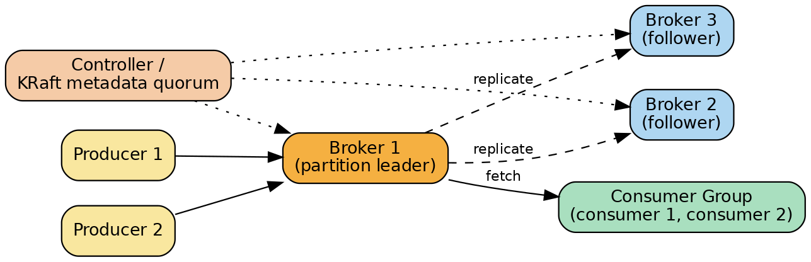
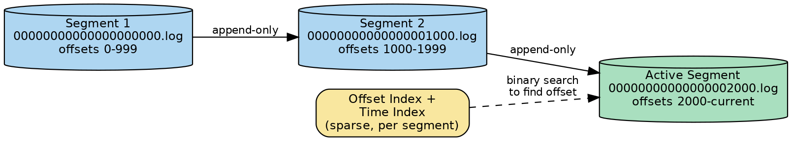
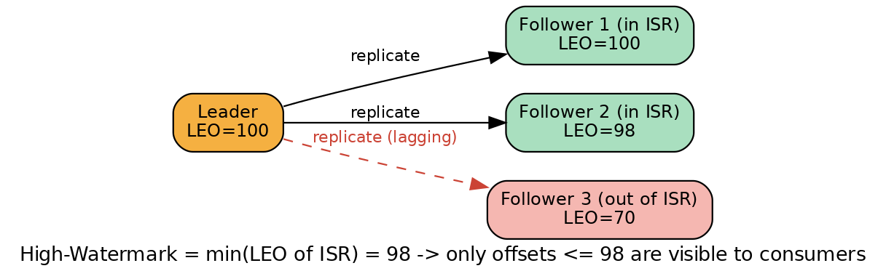

Apache Kafka
A system-design deep dive and interview study guide: internal architecture first, then math, diagrams, real-world usage, trade-offs, and follow-up interview questions.
Overview
Apache Kafka is a distributed, append-only commit log that has been generalized into a full event streaming platform: something that lets you publish, durably store, and process streams of records ("events") at very large scale, with strong ordering guarantees per partition. It was built at LinkedIn around 2010–2011 because existing message queues and log-aggregation tools (ActiveMQ, RabbitMQ, Scribe, Flume) could not handle LinkedIn's need to move billions of activity events per day (page views, searches, ad impressions, operational metrics) into both real-time services and offline systems like Hadoop, without falling over.
Rather than staying at the surface, this guide goes straight into how Kafka actually works under the hood, then builds up to the math, diagrams, and trade-offs an interviewer will expect you to reason about.
Internal Architecture Deep Dive
1.1 Topics, Partitions, and the Append-Only Log
A topic is a named stream of records — conceptually like a table or a folder. Every topic is split into one or more partitions, and each partition is an append-only log: an ordered, immutable sequence of records, each identified by a monotonically increasing offset (a 64-bit integer that is just "the byte position of this message in the stream of all messages ever sent to this partition," per the original design). New records are always appended to the end (the tail); nothing is ever inserted in the middle or edited in place.
Why partition a topic at all? Two reasons, and they pull in different directions:
- Parallelism. A partition is the unit of parallelism in Kafka. Each partition can live on a different broker (server), can be written to by producers independently, and can be read by a different consumer concurrently. More partitions = more brokers can share the write/read load = higher aggregate throughput. This is also why partition count is the hard ceiling on consumer parallelism (see the math section).
- Ordering. Kafka guarantees ordering only within a single partition — records with the same key always land in the same partition (because the partitioner hashes the key to pick a partition), and a consumer reading that partition always sees them in the exact order they were written. There is no global ordering guarantee across partitions of a topic. This is a deliberate trade-off: giving up global order is what makes horizontal scaling of both writes and reads possible. If you need strict ordering across everything, you're forced back down to a single partition, which caps your throughput and parallelism to one broker/consumer.
Worked example. A topic payments with 6 partitions. Producers send records keyed by customerId. All records for customer_42 always land in, say, partition 3, so a consumer reading partition 3 sees customer_42's events in the order they happened. But customer_42's events and customer_99's events (which might land in partition 5) have no ordering relationship to each other — and that's fine, because most business logic only needs per-entity ordering, not global ordering.

1.2 Log Segments on Disk: Segment Files, Offset Index, Time Index
A partition's log is not one giant file — it is physically broken into segments. Each segment is a set of files sharing the same base name, which is the offset of the first message in that segment, zero-padded to 20 digits:
00000000000000000000.log — first segment, starts at offset 0
00000000000000000000.index — offset index for this segment
00000000000000000000.timeindex — time index for this segment
00000000000000001000.log — next segment, starts at offset 1000
00000000000000001000.index, 00000000000000001000.timeindex — index files for the next segment
A new segment is rolled (a new .log file started) when the active segment reaches a configured size (log.segment.bytes, default 1 GB) or a configured age (log.roll.ms / log.roll.hours, default 7 days), whichever comes first. Only the newest segment — the active segment — is ever appended to; all older segments are immutable and closed.
Why segments matter operationally: retention and compaction both operate at the segment granularity, not the message granularity. Kafka deletes or compacts whole segment files once every message in them qualifies, which is cheap (an OS-level file delete) compared to rewriting a giant single file.
Finding a message by offset without scanning the whole log. This is the key mechanism to be able to explain clearly in an interview:
- Kafka keeps an in-memory, sorted list of segment base-offsets for the partition. A binary search over this list (an O(log n) operation over a handful of segments) picks the one segment whose base offset is ≤ the target offset and whose next segment's base offset is greater — i.e., "which file is this offset in."
- Within that segment, Kafka does not index every single message — the
.indexfile is a sparse index: it only records an entry everylog.index.interval.bytesof log data written (default 4 KB), mapping a relative offset to a physical byte position in the.logfile. Each entry is small (8 bytes: 4-byte relative offset + 4-byte position). - Kafka does a second binary search, this time over the sparse index entries in memory (the index file is memory-mapped), to find the closest index entry at or before the target offset.
- From that byte position, Kafka does a short linear scan forward through the
.logfile (at most ~4 KB worth of records, bounded by the sparseness interval) until it reaches the exact target offset.
The net effect: locating any message takes two binary searches plus a bounded linear scan of a few kilobytes — never a scan of the whole (potentially terabyte-sized) log. The .timeindex file works the same way but maps timestamp → offset instead of offset → position, which is what powers "start consuming from this point in time" (KIP-33) instead of "start consuming from this raw offset."

1.3 Producers: Partitioning, Batching, Compression, Acks, Idempotence, Transactions
Partitioning strategy. When a producer sends a record: if a partition is explicitly specified, use it; else if a key is present, the default partitioner computes murmur2_hash(key) % num_partitions — so the same key deterministically always maps to the same partition (as long as partition count doesn't change); else (no key), modern Kafka (2.4+) uses the Sticky Partitioner: it sends a whole batch of keyless records to one partition, then switches to another, rather than round-robining every single record. This produces larger batches (better throughput/compression) at the cost of short-term unevenness that averages out.
Batching and compression. Producers don't send one record per network call. Records destined for the same partition accumulate into a batch (bounded by batch.size and linger.ms — the producer will wait a small extra amount of time hoping more records arrive to fill the batch, trading a little latency for a lot of throughput). Batches can be compressed as a unit (compression.type: gzip, snappy, lz4, zstd) — compressing a batch of similar records together gets a much better ratio than compressing one record at a time, and the compressed batch is stored on the broker and even relayed to consumers still compressed (decompression happens client-side), saving CPU and disk/network bytes end-to-end.
Acks — the durability dial. acks controls how many replicas must confirm a write before the producer treats it as "done":
| Setting | Behavior | Durability | Latency |
|---|---|---|---|
acks=0 | Producer fires and forgets; doesn't even wait for a response | Weakest — message can be silently lost if the leader never receives/persists it | Lowest |
acks=1 | Leader writes to its own local log (page cache) and immediately acks | Message survives leader-local crash-after-flush scenarios but is lost if the leader dies before followers replicate it | Low |
acks=all (a.k.a. acks=-1) | Leader waits until every current in-sync replica has replicated the record before acking | Strongest — combined with min.insync.replicas, survives broker failure as long as one ISR member survives | Highest (bounded by slowest ISR member) |
Since Kafka 3.0, the default producer configuration favors durability: acks=all and enable.idempotence=true are the defaults.
Idempotent producer. Network retries are necessary (a producer can't tell the difference between "broker never got my message" and "broker got it but the ack was lost"), but naive retries can create duplicate messages. Kafka solves this with a Producer ID (PID) assigned to each producer session and a per-partition sequence number that increments with every batch sent. Each batch carries (PID, sequence number). The broker remembers the last several sequence numbers it has committed per (PID, partition); if a retried batch arrives with a sequence number it has already seen, the broker silently discards it as a duplicate instead of appending it again. This gives exactly-once semantics per partition, within the lifetime of one producer instance — if the producer process restarts, it gets a new PID and the guarantee resets (duplicates across restarts are possible unless you use transactions with a stable transactional.id).
Transactions / exactly-once semantics (EOS). Idempotence alone only protects a single partition. To atomically write to multiple partitions (e.g., "consume from topic A, transform, produce to topics B and C" all-or-nothing), Kafka added transactions (KIP-98). A producer configured with a stable transactional.id talks to a transaction coordinator (a broker role, chosen the same way a consumer-group coordinator is chosen — by hashing the transactional ID onto a partition of an internal topic). All transaction state (which partitions are involved, whether the transaction is Ongoing/PrepareCommit/PrepareAbort/Complete) is persisted in the internal, compacted __transaction_state topic. On commit, the coordinator writes special transaction marker (control) records into every partition the transaction touched. Consumers that set isolation.level=read_committed will only expose records up to the Last Stable Offset (LSO) — the offset before the earliest still-open transaction — so they never see the partial effects of an in-flight or aborted transaction. This is how Kafka Streams and other consume-transform-produce pipelines get true exactly-once processing across the whole pipeline, not just at the wire level.
1.4 Replication: Leaders, Followers, ISR, min.insync.replicas, Leader Election, HW & LEO
Each partition is replicated across N brokers, where N is the topic's replication factor (RF). At any moment, exactly one replica is the leader — all reads and writes for that partition go through the leader — and the rest are followers, which behave like consumers of the leader: they continuously fetch new records and append them to their own local log copy.
In-Sync Replicas (ISR). The leader tracks which followers are "caught up enough" to be trusted — the ISR set. A follower is in the ISR if it has fetched up to (approximately) the leader's latest data within a bounded lag window (replica.lag.time.max.ms, commonly 30 seconds in current Kafka versions). If a follower stalls (GC pause, slow disk, network partition), the leader evicts it from the ISR; when it catches back up, it rejoins.
min.insync.replicas. This topic-level setting is the floor: when a producer uses acks=all, the write is only acknowledged once at least min.insync.replicas members of the current ISR (including the leader) have the record. If the ISR shrinks below this number, produce requests fail with NotEnoughReplicas rather than silently accepting a less-durable write. A very common production setup is RF=3, min.insync.replicas=2: you can lose one broker and keep both writing and reading safely.
High Watermark (HW) and Log End Offset (LEO). Every replica (leader or follower) has a LEO — the offset of the next record it would append, i.e., the tip of its own local log. The leader additionally computes the HW as the minimum LEO across all current ISR members. Consumers are only allowed to read up to the HW (not the leader's own LEO) — this is what prevents a consumer from reading a record that could still disappear if the leader crashes before followers replicate it. So during normal replication, LEO(leader) ≥ HW, and they converge once the ISR fully catches up.

Leader election. When a broker holding the leader replica for a partition fails, a controller (see 1.6) picks a new leader — normally by choosing the first live replica still in the last-known ISR. This keeps the guarantee: because a message is only "committed" (visible past the HW) once all ISR members had it, any replica that was in the ISR at the time of commit is safe to promote — it cannot be missing a committed message. If the ISR is empty (every replica died), Kafka's default (unclean.leader.election.enable=false) is to wait for an ISR member to come back rather than promote a stale, out-of-ISR replica — trading availability for consistency; flipping that flag trades the other way and risks silently losing committed data.
Quorum framing (why ISR isn't the same as majority-vote): with a majority-vote replicated log, tolerating f failures needs 2f+1 replicas and f+1 acknowledgements. Kafka's ISR approach needs only f+1 replicas and f (well, all current ISR) acknowledgements to tolerate f failures — cheaper in replica count, at the cost that commit latency is bound by the slowest in-sync replica rather than the median one (majority vote can proceed without waiting for the slowest node).
1.5 Consumers: Consumer Groups, Assignment, Offset Commits, Rebalancing
Consumers read from partitions by joining a consumer group (identified by group.id). Kafka guarantees that within one group, each partition is assigned to exactly one consumer instance at a time — this is how a group achieves parallel, non-overlapping processing of a topic. Multiple independent consumer groups can each read the whole topic independently (Kafka doesn't delete data on read; each group just tracks its own position).
Offset commits. A consumer's position ("I've processed up through offset X of partition P") is called its committed offset, and it's stored not in memory but in a special internal, compacted Kafka topic: __consumer_offsets (50 partitions and replication factor 3 by default). The record key is (group.id, topic, partition) and the value is the committed offset (plus metadata); because the topic is log-compacted, only the latest commit per key needs to survive compaction. This means offset storage is itself just… more Kafka, replicated and durable the same way any other topic is. The specific partition of __consumer_offsets that owns a given group is decided by hashing group.id, and the leader of that partition acts as the group coordinator for that group (handling heartbeats, join/sync, and offset commits).
Rebalancing. Whenever group membership changes (a consumer joins, leaves, crashes, or the topic's partition count changes), partitions must be reassigned — this is a rebalance. The original ("eager") protocol was stop-the-world: every consumer in the group gave up all its partitions, a new assignment was computed, and everyone resumed — even consumers whose assignment didn't actually change experienced a pause. Kafka 2.4 introduced the Cooperative Sticky Assignor (KIP-429): rebalancing became incremental — only the specific partitions that are actually moving are revoked in a first phase, then reassigned in a second phase; consumers whose partitions aren't moving just keep consuming uninterrupted. Kafka 4.0 goes further with a brand-new server-driven protocol (KIP-848): assignment logic moves from the client to the broker's group coordinator, consumers simply report their subscriptions via a continuous heartbeat, and the coordinator pushes incremental revoke/assign instructions — benchmarks cited by Confluent show rebalances for large groups (e.g., 10 consumers, 900 partitions) dropping from ~103 seconds to ~5 seconds. There's also static group membership (group.instance.id, KIP-345), which lets a consumer that restarts quickly reclaim its old assignment without triggering a rebalance at all.
1.6 The Controller: Legacy ZooKeeper vs New KRaft (Kafka Raft)
Someone has to be the source of truth for cluster metadata: which brokers are alive, which broker leads which partition, the ISR for every partition, topic configs, ACLs, and so on. That role is the controller.
Legacy (ZooKeeper) model. Historically, Kafka depended on Apache ZooKeeper (ZK), an external coordination service, for two things: leader election among brokers to pick which single broker acts as the active controller, and storage of cluster metadata (broker registrations, ISR state, topic configs). Brokers and the controller would watch ZK znodes for changes and react. This worked but had real costs: running and operating a second distributed system alongside Kafka; ZK itself became a scalability bottleneck limiting how many partitions a cluster could practically hold (because every metadata change was a synchronous ZK write, and controller failover required reloading all metadata from ZK, which got slower as partition counts grew into the hundreds of thousands); and there were subtle split-brain and stale-metadata bugs at the ZK/Kafka boundary.
New model: KRaft. KIP-500 proposed replacing ZooKeeper with a self-managed metadata quorum built on the Raft consensus protocol, hence "KRaft" (Kafka Raft). In KRaft mode, a small set of broker nodes (typically 3 or 5, an odd number for clean majority votes) run as controllers that replicate a metadata log (the internal __cluster_metadata topic) among themselves using Raft: a majority of controllers must agree before a metadata change is committed, and leader election among controllers is just Raft leader election — no external system involved. Brokers pull metadata updates from the active controller the same way a consumer pulls data, as an event log, instead of via ZK watches.
Why the move made sense:
- Simpler operations — one system to deploy, secure, and monitor instead of two.
- Scalability — KRaft is designed to support millions of partitions per cluster, versus practical ZK-era limits often cited around a couple hundred thousand.
- Faster failover — metadata is an event log that can be replayed incrementally; controller failover doesn't require a full bulk reload from an external store.
KRaft was introduced as early-access in Kafka 2.8, reached production readiness around Kafka 3.3, ZooKeeper mode was marked deprecated in 3.5, and as of Kafka 4.0, ZooKeeper support has been removed entirely — KRaft is the only supported mode.
1.7 Log Retention and Log Compaction
Kafka has two independent, combinable cleanup policies per topic (cleanup.policy):
delete(time/size-based retention). The default. Old segments (not individual messages) are deleted once they age out (log.retention.ms/log.retention.hours, default 168 hours = 7 days, based on the largest timestamp in the segment) or once the partition exceeds a size cap (log.retention.bytes, disabled/unlimited by default). If both are set, whichever triggers first wins. A background cleanup thread checks periodically (roughly every 5 minutes), and there's a short grace delay (log.segment.delete.delay.ms, default ~1 minute) before a segment marked for deletion is actually unlinked from disk — so retention is a minimum guarantee, not an exact cutoff.compact(log compaction). Instead of deleting by age, compaction guarantees that for every key, at least the last known value is retained forever (or until a tombstone expires — see below), even as older values for that same key are thrown away. This is what makes a Kafka topic usable as a changelog / materialized-view source: "give me the latest state of every key," not "give me every event ever." A background log cleaner thread periodically scans segments below a "dirty ratio" threshold (min.cleanable.dirty.ratio) and rewrites them keeping only the most recent record per key.- Tombstones. To delete a key entirely under a compacted topic, a producer sends a record with that key and a null value — this is a tombstone. The compactor keeps the tombstone around (so downstream consumers building a changelog know the key was deleted) for at least
delete.retention.ms, then removes it too, at which point every trace of the key is gone. - Combined
compact,delete. You can also enable both: compact to shrink storage and then apply age/size deletion on top — used, e.g., on the__consumer_offsetsand__transaction_stateinternal topics.
1.8 Zero-Copy Transfer (the sendfile Syscall)
A huge share of Kafka's read-path throughput comes from zero-copy data transfer. A "traditional" file → network send goes: disk → OS kernel read buffer (DMA copy) → application/user-space buffer (CPU copy) → kernel socket buffer (CPU copy) → NIC buffer (DMA copy) — four copies and four user/kernel context switches, most of that work spent moving bytes the application never actually needed to touch.
Kafka instead uses the Linux sendfile() system call, which tells the kernel "move bytes directly from this file descriptor to this socket descriptor," skipping the user-space hop entirely. With sendfile(), only two DMA copies happen (disk/page-cache → kernel buffer, kernel buffer → NIC), and modern NICs with scatter-gather DMA can even copy straight from the OS page cache to the NIC, since Kafka never caches messages in the JVM heap — it deliberately relies on the OS page cache (log segments are written and re-read almost entirely as sequential, cache-friendly I/O). What this optimizes: it removes CPU cycles and context-switch overhead from the broker's hot read path, meaning a broker can push data to consumers at close to the physical network's line rate rather than being CPU-bound on copying bytes it doesn't need to inspect.
System Design View: End-to-End Walkthroughs
Producer send with acks=all (RF=3, min.insync.replicas=2)
- Application calls
producer.send(topic="orders", key="cust-42", value=payload). - Client-side partitioner hashes
"cust-42"→ partition 3 (deterministic, via murmur2 % partition count). - The record is added to an in-memory batch for (topic=orders, partition=3); the producer waits up to
linger.msfor more records to accumulate, then compresses the batch. - The producer's networking layer sends the Produce request to whichever broker is currently the leader for partition 3 (looked up from cached cluster metadata).
- The leader broker appends the batch to the active segment of its local log (an in-memory page-cache write, sequential I/O) and assigns it the next offsets; the leader's LEO advances.
- Because
acks=all, the leader does not respond yet. It waits for the record to be replicated. - Follower brokers (replicas 2 and 3), which are continuously issuing Fetch requests to the leader for this partition, pull the new batch and append it to their own local logs; each follower's LEO advances as it does so.
- Once the leader observes that enough ISR members (here, both followers, satisfying
min.insync.replicas=2together with itself) have replicated up to this offset, it advances the High Watermark to include this record. - The leader sends the Produce response (ack) back to the producer, confirming the write is committed.
- If, at step 6–9, the ISR had shrunk below
min.insync.replicas(e.g., a follower had died), the leader would instead return aNotEnoughReplicasException, and the producer (per itsretries/idempotence config) would retry. - Only after the HW advances past this offset can any consumer fetch it — consumers never see uncommitted (not-fully-replicated) records.
Consumer group reading with offset commits
- Consumer instance starts, configured with
group.id="billing-service"and subscribes to topicorders. - It sends a request that resolves to the group coordinator — the broker leading the
__consumer_offsetspartition thathash("billing-service") % 50maps to. - The consumer (and any siblings in the same group) go through group membership / partition assignment (JoinGroup/SyncGroup in the classic protocol, or the continuous heartbeat-based flow under KIP-848) — the coordinator (or, pre-848, the group leader consumer) decides which consumer gets which partitions, e.g., consumer-1 gets partitions 0–2, consumer-2 gets partitions 3–5.
- Each consumer looks up its last committed offset per assigned partition (read from
__consumer_offsets, or falls back toauto.offset.resetpolicy — earliest/latest — if none exists). - The consumer issues Fetch requests to the leader broker of each assigned partition, requesting records starting at its current offset, up to the partition's High Watermark.
- The consumer processes the returned batch (deserializes, runs business logic, may write results elsewhere).
- Periodically (or after each batch, depending on
enable.auto.commit/ manual commit strategy), the consumer sends an OffsetCommit request to the group coordinator, which appends a record(group, topic, partition) -> offsetto__consumer_offsets(replicated like any other write, with its own acks/ISR behavior). - If the consumer crashes before committing, on restart (or on another group member taking over that partition) processing resumes from the last committed offset, which may mean some records are reprocessed (this is Kafka's default at-least-once delivery semantic from the consumer's point of view unless the application does something extra like idempotent writes or transactional consume-then-produce).
- If group membership changes (new consumer joins, one leaves/crashes, or
session.timeout.msheartbeat is missed), a rebalance is triggered and partitions are reassigned per section 1.5.
The Math Behind Kafka
All calculations below use decimal units — 1 MB = 106 bytes, 1 GB = 103 MB, 1 TB = 103 GB — which is the convention most throughput/capacity discussions use; swap in binary GiB/TiB if your infra team measures disks that way, the ratios still hold.
3.1 Throughput → Storage (Retention Math)
Worked example — 100 MB/s sustained for 7 days: 100 MB/s × 86,400 s/day = 8,640,000 MB/day = 8,640 GB/day; 8,640 GB/day × 7 days = 60,480 GB = 60.48 TB (one copy, pre-replication).
With replication factor RF = 3 (every byte stored on 3 brokers): 60.48 TB × 3 = 181.44 TB total disk across the cluster.
Default
log.segment.bytes = 1 GB. If that 100 MB/s is spread evenly across P partitions, each partition receives 100/P MB/s.
With P = 10 partitions: each partition rolls a new segment every ~100 seconds (≈864 segments/day/partition, ×10 partitions ≈ 8,640 segments/day cluster-wide) — which cross-checks against 60,480 GB/week ÷ 1 GB/segment ≈ 60,480 segments/week ≈ 8,640/day. More partitions ⇒ each partition rolls segments less often (smaller share of the firehose per partition) even though the cluster-wide segment creation rate stays the same.
3.2 Durability Probability with N Replicas and min.insync.replicas
Model each broker as independently failing (losing unrecoverable data) with probability p during some exposure window (illustrative, not empirical). If a record is only guaranteed to be on r replicas when it's acknowledged (r is effectively bounded below by
min.insync.replicas when using acks=all), durability follows this formula.
Worked example with p = 1% = 0.01: RF=1 (any acks), or RF=3 with min.insync.replicas=1 and acks=1 → effective r=1 → P(loss) = 0.01 (1%). RF=3, min.insync.replicas=2, acks=all → r=2 → P(loss) = 0.0001 (0.01%). RF=3, min.insync.replicas=3, acks=all → r=3 → P(loss) = 0.000001 (0.0001%).
Each extra required replica multiplies durability risk down by another factor of p — durability improves geometrically with
min.insync.replicas, which is why acks=all + min.insync.replicas=2 (on RF=3) is the standard "safe default," while acks=1 gives you essentially no protection against losing the leader before it replicates.
3.3 Availability Trade-off from the Same Knob
RF=3, min.insync.replicas=2 → tolerate 1 broker down and keep writing (and that write is still durable against 1 more failure).
RF=3, min.insync.replicas=3 → tolerate 0 broker down for writes (maximum durability, minimum write-availability).
RF=3, min.insync.replicas=1 → tolerate 2 brokers down for writes, but durability degrades toward the RF=1 case if the ISR has shrunk to just the leader.
3.4 Latency Budget for acks=all
Leader appends to page cache (no fsync): 0.1–0.5 ms
Leader → followers replication (parallel, bounded by slowest ISR member): 1–5 ms
Follower appends to page cache: 0.1–0.5 ms
Leader observes HW advance, acks producer (network): 0.5–1 ms
Total (same-AZ, p50) ≈ 2–5 ms (p99 often 10–20+ ms due to GC/jitter)
acks=all latency is dominated by that hop — expect ≈ 80–160+ ms, because the leader must wait for the slowest replica in the ISR before it can advance the HW and ack.
This is the core reason people avoid stretching a single Kafka cluster's ISR across continents for latency-sensitive writes, using Kafka's geo-replication (MirrorMaker) between independent regional clusters instead.
3.5 Partition Count vs. Consumer Parallelism
Because a partition can be owned by only one consumer instance in a group at a time, extra consumers beyond the partition count sit idle. Worked example: topic with 12 partitions, consumer group with 20 instances → 12 are active, 8 sit idle. To usefully run 50 consumer instances, you need ≥50 partitions.
Corollary: increasing partition count is a one-way, disruptive operation — new messages hash into the new (larger) modulus, so
key → partition mapping changes going forward even though old messages stay where they were, which can silently break "this key's events are always in the same partition" assumptions that downstream consumers may rely on.
CAP Theorem Placement and Durability–Availability Trade-offs
Kafka is not a single request/response data store, so CAP (Consistency / Availability / Partition tolerance) doesn't map onto it as cleanly as it does onto, say, a key-value store — Kafka is better thought of as a pipeline of producers, durably-replicated partitions, and consumers, each of which can be tuned independently. That said, the replication and acknowledgment knobs are exactly where the CAP/PACELC trade-off shows up.
Favoring Consistency/Durability (C) over Availability (A): acks=all, high min.insync.replicas (equal to or close to RF), unclean.leader.election.enable=false. Under a network partition or broker failure that shrinks the ISR below min.insync.replicas, the partition stops accepting writes (NotEnoughReplicasException) rather than risk acknowledging a write that could vanish. This is a CP-leaning configuration.
Favoring Availability (A) over Consistency: acks=1 or acks=0, low min.insync.replicas, unclean.leader.election.enable=true. Writes keep flowing even when the ISR has shrunk to just the leader (or even a stale, out-of-ISR replica is allowed to become leader) — but a subsequent leader failure can silently lose data that was already acknowledged to producers. This is an AP-leaning configuration.
Read-side availability vs. consistency: consumers only ever see records up to the High Watermark — this is itself a consistency mechanism (never expose data that isn't safely replicated), and it means read availability of the very newest writes is deliberately delayed by however long replication takes, in exchange for never showing a consumer something that could later be rolled back by a leader failure.
PACELC framing: even absent a partition, Kafka trades Latency vs. Consistency (the "ELSE" branch of PACELC) through acks: acks=all accepts higher latency (wait for the slowest ISR member) in exchange for durability; acks=1/acks=0 accept weaker durability for lower latency. During an actual partition (the "P" branch), Kafka's ISR shrinking behavior is the availability lever: a topic configured to require a large ISR essentially chooses C over A when enough replicas are unreachable, while a topic configured with a low min.insync.replicas chooses A over C.
The practical interview takeaway: Kafka doesn't give you a single global CAP answer — it gives you per-topic dials (acks, min.insync.replicas, unclean.leader.election.enable) that let different topics in the same cluster sit at different points on the durability–availability spectrum (e.g., a payments topic tuned CP, a page-views analytics topic tuned AP).
Real-World Usage Patterns
Messaging / message-broker replacement. A higher-throughput, partitioned, replicated alternative to traditional brokers like ActiveMQ/RabbitMQ for decoupling producers from consumers.
Website/activity tracking. Kafka's original use case at LinkedIn: publishing user activity (page views, searches, clicks) as real-time feeds consumed by both online services and offline batch systems (Hadoop).
Metrics and operational monitoring. Aggregating distributed application/infrastructure metrics into centralized feeds.
Log aggregation. Collecting log data from many servers as a stream abstraction, replacing tools like Scribe/Flume, with the benefit of replication-backed durability and much lower end-to-end latency.
Stream processing. Multi-stage pipelines where raw topics are consumed, transformed/enriched/joined, and republished to new topics (Kafka Streams, ksqlDB, Apache Flink, Spark Structured Streaming all build on this).
Event sourcing. Application state changes are captured as an ordered, immutable log of events rather than as in-place mutations to a database row — Kafka's support for very large, durable, ordered logs makes it a natural backend for this architectural style.
Change Data Capture (CDC). Tools like Debezium tail a source database's transaction log and publish every row-level insert/update/delete as a Kafka event (rather than polling tables), giving downstream systems a real-time replica feed with minimal impact on the source database, preserved operation order, and support for cache invalidation, search-index updates, materialized views, and fan-out synchronization to multiple heterogeneous systems.
Commit log for distributed systems. Kafka itself (via log compaction) can serve as an external commit log that other distributed systems use to replicate state between their own nodes and resync failed replicas — conceptually similar to what a system like Apache BookKeeper provides.
Trade-offs and Limitations
- Partition count is not free. Every partition is a set of open file handles (for its segments'
.log/.index/.timeindexfiles), consumes leader-election and replication overhead, and adds to controller/metadata load. Clusters with very high per-broker partition counts see slower controller failover, higher memory/GC pressure from index structures, and longer end-to-end latencies from more fsync/replication fan-out — so "just add more partitions" is not a free scaling lever. - Rebalancing pauses. Even with cooperative/incremental protocols, a rebalance still briefly interrupts processing for the partitions actually being reassigned; the old eager protocol paused the entire group. Frequent consumer churn (autoscaling that scales consumers up/down often, or flaky consumers missing heartbeats) can make rebalancing a chronic tax rather than a rare event.
- No true random access / no secondary indexes. Kafka is fundamentally an ordered, append-only log addressed by offset (or by sparse time index) — there is no way to query "give me all records where
field = X" without external indexing (e.g., a search engine or database fed via a consumer). It is optimized for sequential scan, not point lookup by arbitrary predicate. - Ordering is per-partition only. As covered in 1.1, there is no cross-partition ordering guarantee — applications that need strict global order are forced onto a single partition, which caps throughput to what one broker (and one consumer) can handle.
- Partition count changes are effectively one-way and disruptive. Adding partitions changes the key→partition hash mapping for new messages going forward without moving old data, which can break assumptions about "this key always maps to the same partition" for any consumer logic (e.g., local state stores keyed by partition) that predates the resize. Reducing partition count isn't supported at all without recreating the topic.
- Storage is not designed for point-in-time random deletes (other than whole-segment retention or key-based tombstones via compaction) — you can't cheaply delete "record #12345 specifically" from the middle of a log.
- Operational complexity remains non-trivial even after removing ZooKeeper: correctly sizing partitions, replication factor,
min.insync.replicas, retention, and rebalancing behavior per topic requires real expertise, and mis-sized clusters are a common source of production incidents (e.g., under-provisioned partition counts capping consumer throughput, ormin.insync.replicasset too aggressively causing write outages during routine maintenance).
Common Interview Questions
.index file (offset→byte-position, one entry roughly every 4 KB by default) to find the nearest indexed position at or before the target; (3) linearly scan forward a few KB in the .log file from there to the exact offset.acks=0 — producer doesn't wait for any response (fastest, weakest durability). acks=1 — waits only for the partition leader to write to its local log (lost if leader dies before replicating). acks=all — waits for every current ISR member to replicate the record, giving the strongest durability at the cost of waiting for the slowest in-sync replica.__transaction_state topic, and commit/abort marker records; consumers with isolation.level=read_committed only see records up to the Last Stable Offset, hiding uncommitted/aborted transactional writes.unclean.leader.election.enable=false), Kafka waits for a former ISR member to come back online and re-elects it as leader, favoring consistency (no committed data is silently lost, but the partition is unavailable for writes/reads in the meantime). Flipping the flag to true instead promotes the first replica that comes back — even if it wasn't in the ISR — restoring availability sooner at the risk of losing some committed messages.cleanup.policy=delete) discards whole old segments once they exceed an age or size limit — good for "keep the last N days/GB of raw events." Compaction (cleanup.policy=compact) instead guarantees at least the latest value per key is retained indefinitely, discarding only superseded older values for the same key — good for "give me the current state of every key," e.g., a changelog topic. Both can be combined (compact,delete).delete.retention.ms after being written (rather than removed instantly) so that any consumer that hasn't yet caught up gets a chance to see the delete marker and update its own downstream state accordingly, before the tombstone itself is finally purged.sendfile() syscall so the OS kernel transfers bytes directly from the page cache to the network socket/NIC via DMA, without copying data into the broker application's user-space memory. A traditional read-then-send path needs up to four data copies and four context switches; zero-copy cuts that down substantially, freeing CPU cycles so the broker's throughput is limited by network bandwidth, not by copy overhead — this matters a lot because Kafka deliberately avoids caching messages in the JVM heap and relies on the OS page cache instead.acks=1) — a 50x improvement from requiring one additional acknowledging replica.fsync every write to physical disk by default — the leader append is effectively a page-cache write (sub-millisecond). The dominant cost is waiting for the slowest required in-sync follower to fetch, append, and be observed by the leader — which is bounded by network round-trip time between the leader and that follower, not by disk I/O. This is why stretching a single cluster's ISR across regions dramatically increases acks=all latency, while same-AZ deployments keep it in the low single-digit milliseconds.min.insync.replicas sets the floor for how many ISR members (including the leader) must ack a write before it's considered committed when acks=all is used. Raising it improves durability geometrically (fewer replicas need to simultaneously fail to lose data) but reduces availability linearly, because RF − min.insync.replicas is exactly the number of simultaneous broker failures the topic can tolerate while still accepting writes — set it too high (e.g., equal to RF) and a single broker blip halts writes entirely.hash(key) % partition_count. Changing the partition count changes that modulus for every future message, so a key that used to land on partition 3 might now land on partition 5 — while all its old messages remain on partition 3. Any consumer or downstream system relying on "this key's entire history is in one partition" (e.g., local key-value state built by replaying a single partition, or compacted-topic reasoning) can silently break after a partition count increase, so it should be treated as a rare, carefully coordinated operation.Key Takeaways
References
- Kreps, J., Narkhede, N., Rao, J. — "Kafka: A Distributed Messaging System for Log Processing" (LinkedIn, NetDB '11)
- Apache Kafka — Introduction (what event streaming is, core concepts)
- Apache Kafka — Use Cases
- Apache Kafka 3.5 Docs — Implementation: Log (segments, indexing, binary search, retention/deletes, guarantees)
- Apache Kafka Docs — Consumer Rebalance Protocol (KIP-848)
- Apache Kafka Javadoc — CooperativeStickyAssignor
- Confluent Docs — Kafka Replication and Committed Messages (ISR, HW/LEO, quorum comparison, unclean leader election, controller)
- Confluent Docs — Kafka Log Compaction
- Confluent Blog — "Exactly-once Semantics is Possible: Here's How Apache Kafka Does It"
- Confluent Blog — "Transactions in Apache Kafka"
- Apache Kafka KIP-98 — Exactly Once Delivery and Transactional Messaging
- Apache Kafka KIP-500 — Replace ZooKeeper with a Self-Managed Metadata Quorum
- Confluent Developer — "KRaft: Apache Kafka Without ZooKeeper"
- Confluent Blog — "KIP-848: A New Consumer Rebalance Protocol for Apache Kafka 4.0"
- Conduktor — "Kafka Idempotent Producer (enable.idempotence)"
- Conduktor — "Kafka Default Partitioner & Sticky Partitioner"
- Baeldung — "log.segment.bytes vs. log.retention.hours Parameters in Kafka"
- Strimzi Blog — "Deep dive into Apache Kafka storage internals: segments, rolling and retention"
- Confluent Learn — "Kafka Rebalancing Explained"
- LinkedIn Engineering Blog — "The Log: What every software engineer should know about real-time data's unifying abstraction" (referenced by Kafka's own Uses page)
- Debezium Blog — "Distributed Data for Microservices — Event Sourcing vs. Change Data Capture"
- Designgurus.io — "CAP Theorem vs PACELC: Understanding Distributed System Trade-offs"